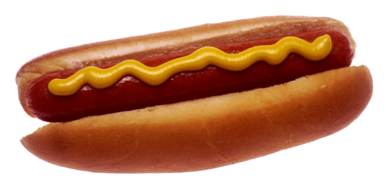

Hotdogs

Making the perfect hotdog is easier than it seems!
There are many different ways to cook and serve a hotdog; over the fire, boiled, steamed, cut-up etc... Today we're going to keep it simple by boiling the hotdogs!
Ingredients
- Your favorite brand of hotdogs
- Hotdog buns
- One pot
- Water
- Tongs
- Condiments
Steps
- Fill one pot with a few inches of water
- Boil the water in the pot
- Once the water is boiling put the hotdogs in the water
- Let the hotdogs boil until they start to crack
- While waiting for the hotdogs to cook you can toast the hotdog buns in the oven
- Take the hotdogs out of the water with tongs and carefully put them in the hotdog buns
- Put your condiments on top of the hotdog
- Serve the hotdogs